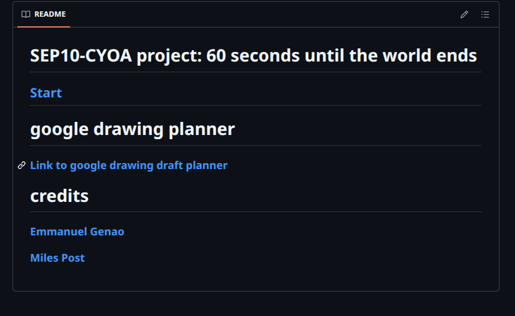

In SEP, we had just learned how to link files using the command line. Then, we had a project called "Choose Your Own Adventure." In this project, I had to work with a partner to create a story using linked files. The topic we got assigned to do was "60 Seconds Before the World Ends," but we took some creative liberty and changed it into "60 Seconds Until an Asteroid Destroys Earth."
Me and my partner had a ton of fun planning out what we could do, to the point where we got a little carried away. When me and my partner realized this, we cut back on some stuff and prioritized the important stuff—the base of the project. Once we started coding, we added on to the plan and developed our project more. This was super fun because I was able to work with another partner creatively to make something unlike anything I had made before.
A challenge that me and my partner had was communicating with one another. For most of the time we had to work on the project together, my partner was not able to make it in because of the snow. This was completely understandable, but it just meant that we had to rely on Slack to communicate. At first, communication felt stiff and restricted compared to how we were able to work with each other in person. As we talked more, I felt that we both found the line between professional and effective. Towards the end of the project, we were really able to communicate with one another well, and it really helped in the completion of the project.
If I had more time to work on the project, I would have probably added more endings and added more text to make the story more like an actual story. On top of this, I would have liked to make the project into a website using HTML. The reason why me and my partner didn't do this in the first place was because we weren't sure how much more we wanted to add and wanted to dedicate more time to the story rather than putting it into HTML.
Link about the project